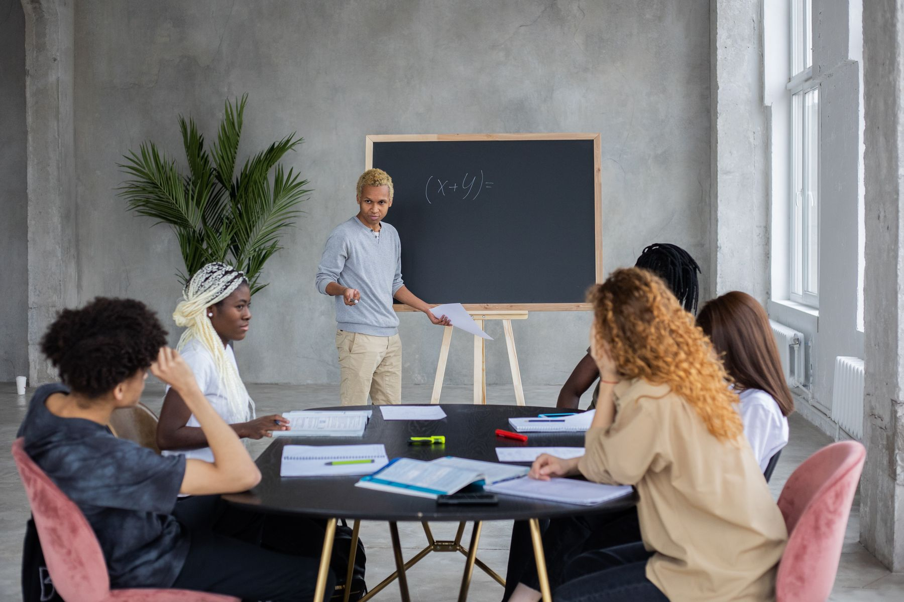

Tutoring and homework help
Math, science, physics, writing, and general academic support.
View details →Student-led academic support
We are a Bay Area student volunteer group working with Native communities and community organizations to develop useful education projects based on the needs they identify.
Learn how we work with communities →Programs and support
Our strongest areas are tutoring, STEM, engineering, technology, and college preparation. Specific projects depend on community priorities and the skills of available volunteers.
Math, science, physics, writing, and general academic support.
View details →Workshops, projects, and subject support based on volunteer experience.
View details →SAT preparation, applications, college research, and scholarship resources.
View details →Coding, computer science, digital skills, or website help when qualified volunteers are available.
View details →
How the group works
We do not begin by assuming what students need. A tribe, education department, school, or Native community organization identifies an area where additional help may be useful. We discuss what our volunteers can realistically offer and plan a small first project together.
Getting started
We are especially interested in small, practical first projects that allow everyone to learn what works.
A community organization tells us about its students and priorities.
We agree on a realistic format, timeline, and volunteer requirements.
We organize students with the right skills and complete requested onboarding.
We begin, listen to feedback, and make adjustments before doing more.
Community inquiries
We would be glad to have a short introductory conversation.